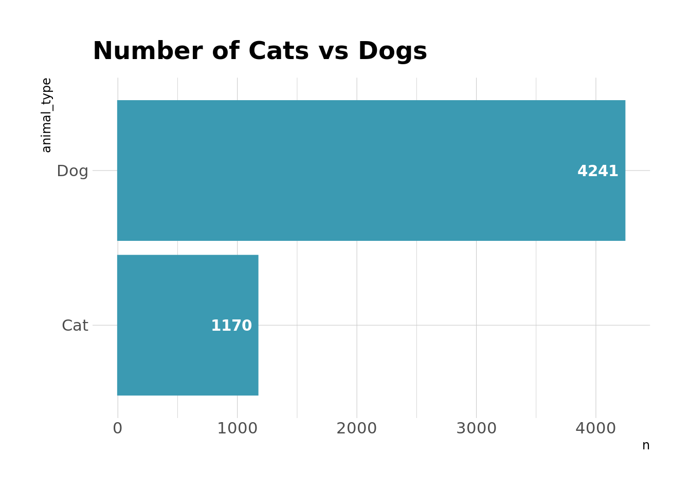
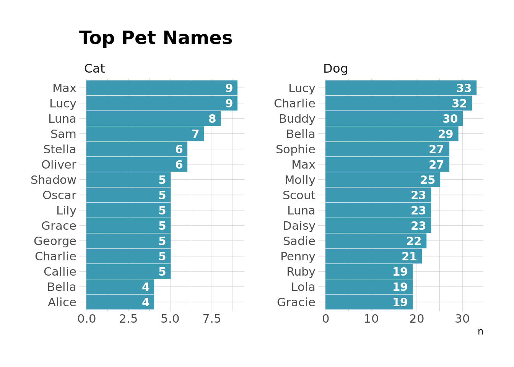

library(tidyverse)
library(osmdata)
library(sf)
library(janitor)
library(hrbrthemes)
library(wesanderson)
library(tidytext)
library(kableExtra)
library(ggtext)
theme_set(theme_ipsum())
pal <- wes_palette("Zissou1")
colors <- c("Dog" = pal[1], "Cat" = pal[3])I recently stumbled across the RVA Open Data Portal and, when browsing through the datasets available, noticed they had one on pet licenses issued by the city. Since I’m a huge dog fan & love our pitty Nala more than most people in my life, I figured I’d splash around in the data a little bit to see what I can learn about pets in RVA. You can get the data here, although note that the most recent data is from April 2019.
First, let’s load our packages and set our plot themes/colors
Next, we’ll read in the data and clean it up a little bit. In this dataset, each row represents a licensed pet in Richmond, Virginia. The dataset includes animal type (dog, cat, puppy, kitten) and the address of the owners. Whoever set up the data was also nice enough to include longitude and latitude for each address in the dataset, which means I don’t need to go out and get it. For our purposes here, I’m going to lump puppies in with dogs and kittens in with cats. I’m also going to extract the “location” column into a few separate columns. Let’s take a look at the first few entries.
pets_raw <- read_csv(here::here("data/rva_pets_2019.csv"))
pets_clean <- pets_raw %>%
clean_names() %>%
extract(col = location_1,
into = c("address", "zip", "lat", "long"),
regex = "(.*)\n.*(\\d{5})\n\\((.*), (.*)\\)") %>%
mutate(animal_type = str_replace_all(animal_type, c("Puppy" = "Dog", "Kitten" = "Cat")))
head(pets_clean) %>%
kable(format = "html") %>%
kable_styling(bootstrap_options = c("striped", "hover", "condensed"))| animal_type | animal_name | address | zip | lat | long | load_date |
|---|---|---|---|---|---|---|
| Cat | Molly | 301 Virginia Street APT 1008 | 23219 | 37.53294 | -77.433825 | 20180627 |
| Dog | Sam | 1407 Wilmington Avenue | 23227 | 37.58294 | -77.455213 | 20180627 |
| Cat | Taffy | 114 N Harvie Street | 23220 | 37.548414 | -77.45745 | 20180627 |
| Dog | Jackson | 4804 Riverside Drive | 23225 | 37.527326 | -77.483249 | 20180627 |
| Dog | Cirrus | 3107 E Marshall Street | 23223 | 37.52904 | -77.412272 | 20180627 |
| Dog | Henri | 1900 Maple Shade Lane | 23227 | 37.581979 | -77.466207 | 20180627 |
Ok, now that our data is set up, let’s see if there are more cats or dogs in the city.
pets_clean %>%
count(animal_type) %>%
ggplot(aes(x = n, y = animal_type)) +
geom_col(color = pal[1], fill = pal[1]) +
geom_text(aes(x = n-50, label = n), hjust = 1, color = "white", fontface = "bold") +
labs(
title = "Number of Cats vs Dogs"
)
Alright, so, lots more dogs. Like almost 4 to 1 dogs to cats. Which is something I can get behind. I’m a firm believer in the fact that dogs are wayyy better than cats.
I’m also interested in the most common names for pets in RVA.
pets_clean %>%
group_by(animal_type) %>%
count(animal_name, sort = TRUE) %>%
slice(1:15) %>%
ungroup() %>%
ggplot(aes(x = n, y = reorder_within(animal_name, n, animal_type))) +
geom_col(color = pal[1], fill = pal[1]) +
geom_text(aes(x = if_else(animal_type == "Cat", n - .25, n - 1), label = n), hjust = 1, color = "white", fontface = "bold") +
facet_wrap(~animal_type, scales = "free") +
scale_y_reordered() +
labs(
title = "Top Pet Names",
y = NULL
)
These seem pretty standard to me, and unfortunately, nothing is screaming “RVA” here. No “Bagels,” no “Gwars,” etc.
I also pulled out zip codes into their own column earlier, so we can take a look at which zip codes have the most dogs and cats.
pets_clean %>%
filter(!is.na(zip)) %>%
group_by(zip) %>%
count(animal_type, sort = TRUE)%>%
ungroup() %>%
group_by(animal_type) %>%
top_n(n = 10) %>%
ungroup() %>%
ggplot(aes(x = n, y = reorder_within(zip, n, animal_type))) +
geom_col(color = pal[1], fill = pal[1]) +
geom_text(aes(x = if_else(animal_type == "Cat", n - 1, n - 4), label = n), hjust = 1, color = "white", fontface = "bold") +
facet_wrap(~animal_type, scales = "free") +
scale_y_reordered() +
labs(
title = "Number of Pets by Zipcode",
y = NULL
)
Alright, so most of the pets here live in Forest Hill/generally south of the river in 23225, and another big chunk live in 23220, which covers a few neighborhoods & includes The Fan, which is probably where most of the pet action is.
And finally, since we have the latitude and longitude, I can put together a streetmap of the city showing where all of these little critters live. To do this, I’m going to grab some shape files through the OpenStreetMaps API and plot the pet datapoints on top of those.
pets_map <- st_as_sf(pets_clean %>%
filter(!is.na(long)), coords = c("long", "lat"),
crs = 4326)
get_rva_maps <- function(key, value) {
getbb("Richmond Virginia United States") %>%
opq() %>%
add_osm_feature(key = key,
value = value) %>%
osmdata_sf()
}
rva_streets <- get_rva_maps(key = "highway", value = c("motorway", "primary", "secondary", "tertiary"))
small_streets <- get_rva_maps(key = "highway", value = c("residential", "living_street",
"unclassified",
"service", "footway", "cycleway"))
river <- get_rva_maps(key = "waterway", value = "river")
df <- tibble(
type = c("big_streets", "small_streets", "river"),
lines = map(
.x = lst(rva_streets, small_streets, river),
.f = ~pluck(., "osm_lines")
)
)
coords <- pluck(rva_streets, "bbox")
annotations <- tibble(
label = c("<span style='color:#FFFFFF'><span style='color:#EBCC2A'>**Cats**</span> and <span style='color:#3B9AB2'>**Dogs**</span> in RVA</span>"),
x = c(-77.555),
y = c(37.605),
hjust = c(0)
)
rva_pets <- ggplot() +
geom_sf(data = df$lines[[1]],
inherit.aes = FALSE,
size = .3,
alpha = .8,
color = "white") +
geom_sf(data = pets_map, aes(color = animal_type), alpha = .6, size = .75) +
geom_richtext(data = annotations, aes(x = x, y = y, label = label, hjust = hjust), fill = NA, label.color = NA,
label.padding = grid::unit(rep(0, 4), "pt"), size = 11) +
coord_sf(
xlim = c(-77.55, -77.4),
ylim = c(37.5, 37.61),
expand = TRUE
) +
theme_void() +
scale_color_manual(
values = colors
) +
theme(
legend.position = "none",
plot.background = element_rect(fill = "grey10"),
panel.background = element_rect(fill = "grey10"),
text = element_markdown()
)
Reuse
Citation
BibTeX citation:
@online{ekholm2020,
author = {Ekholm, Eric},
title = {RVA {Pets}},
date = {2020-04-23},
url = {https://www.ericekholm.com/posts/rva-pets},
langid = {en}
}
For attribution, please cite this work as:
Ekholm, Eric. 2020. “RVA Pets.” April 23, 2020. https://www.ericekholm.com/posts/rva-pets.